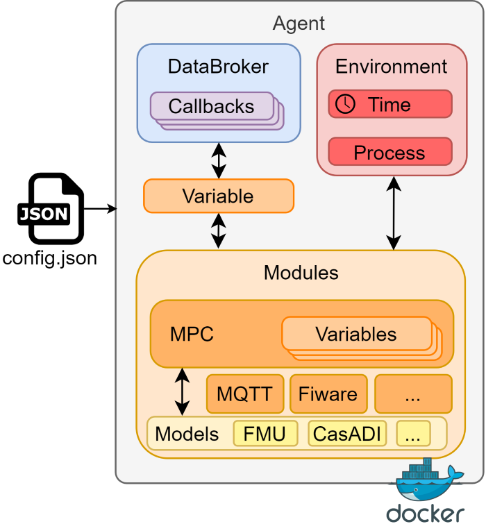

How does the AgentLib work internally?
The basic idea behind this framework is the usage of digital agents to manage various tasks. The implementation is motivated by the distributed control of building energy systems. However, the implementation is carried out to enable a broad usage of the library, e.g. for digital twins, agent based modeling or other forms of cooperative system operation.
In order to understand how the AgentLib functions, you need to understand the setup of an agent:
Each agent has multiple Modules. In turn, each module exists to fulfill a task: Communication, optimization, predictive maintenance, simulation, etc. This way, an agent may accomplish one or multiple tasks / services.
Each agent has exactly one DataBroker. This DataBroker manages the communication between Modules of an agent. Is informed of the change of state in other modules and synchronized. Additionally, if one module sets a variable, callbacks in other modules may be triggered, allowing for asynchronous execution of tasks and reactive behaviour.
Each agent is located in exactly one Environment which specifies the time and handles all processes. Setting the configuration of this environment allows the agent to execute its tasks in realtime, scaled realtime, or as fast as possible in a simulation setting.
Lastly, the whole AgentLib is configurable by json. This means all functional classes (e.g. Environment, Agent) contain a respective configuration class. All configuration is accomplished using pydantic’s BaseModel.
This has two implications for users of the AgentLib:
If you are a user, you just have to learn how to configure existing code using json.
If you want to develop new modules/services, you have to understand the code behind the AgentLib. At the current stage of development, nearly all new users will have to develop some kind of new module. This is due to the fact that application and modeling in general depends on the goal of your task. However, you may use pre-defined modules such as communicators or predictive controllers. Ready-to-use modules will be contiunally released as plugins for the AgentLib.
All mentioned features are summarized by this general agent Figure:
 Figure 1: The core idea of an agent in the AgentLib
Note: Why did we include the docker symbol? Because the AgentLib is fully compatible with cloneMAP. This way, you can execute any number of agents in different docker containers and machines. Thus, the AgentLib is easily executable in a fully distributed way.
There are three key components to any agent: Modules, DataBroker and the Environment. The following sections describe in brief what the role of each type is.
Note: For our use-case, we added the option to model time-variant systems using the Model class. However, to understand the AgentLib the understanding of models is not required.
Modules
As all intelligence of agents is outsourced to the modules of the agent, understanding how modules work is key to using the AgentLib.
As stated in the beginning, classes in the AgentLib are separated by function and configuration, so is the module.
Module configuration: BaseModuleConfig
Each module has, besides a module_id and an agent_id to uniquely identify itself,
other properties defined in its implementation. Some of these will be AgentVariables,
or lists of AgentVariables, which define the variables that govern how the module
interacts within the multi-agent-system. Commonly, these variables will be either
inputs from other agents or modules, and outputs which should be communicated to
other agents or modules.
All variables specified will be merged into the variables field of the Configuration.
Besides these lists, a module configuration can contain any information you need for the function of the module to work.
To add custom information, just extend the BaseModuleConfig and add any Field you need.
By extending the class you guarantee that the configuration is correctly parsed at initialization.
If a user gives wrong inputs, pydantic will raise a ValidationError.
Without pydantic, you would only see the wrong configuration at run-time, possible hours after starting the agent.
This would make debugging and robustness of the agent much more difficult.
Module function: BaseModule
The basic module has no function in itself. To implement your functionality, custom modules need to overwrite to methods:
process: Define any synchronous tasks of your module. More on the process in the Environment section.register_callbacks: Define any asynchronous task of your module. This function is triggered at initialization of the module and registers any callback you want. More on callbacks in the DataBroker section.
To know when to use which method, ask yourself the question: When do I want to excecute a specific taks?
If the answer is: Every X seconds, use the
process.If the answer is: Every time a specific variable changes, use the
register_callback.
The BaseModule already implements some functions everyone uses.
For example, each variable specified in the config will register a callback in the DataBroker of the agent.
Thus, each time a matching variable is sent to the DataBroker, it’s value is directly updated in the Module.
Therefore, you can use the set and get functions of the Module to access any variable you specified in the config via the name of the variable.
But what are variables? More on that in the next section.
Variables
All agents use AgentVariables to exchange information between modules or agents.
An AgentVariable is specified by a number of attributes.
The most important ones are:
name: Name of the variable. The only required field. Only for agent-internal tasks.
value: The current value of the variable.
alias: The publicly known name of the variable. If the name inside an agent is cryptic, e.g.
House.Room.Temp_outdoorAir, the alias helps to define a common naming space for inter-agent communication, e.g.T_oda.source: The source of the variable. It is an instance of
Sourceand contains either only theagent_idor amodule_id. Relevant for the case if multiple agents using the same alias. This way you can specify: I want the variable with aliasT_odaof agentRoomAgent.shared: A boolean value, specifying if the variable should be communicated outside the agent.
Aside from that, there are fields of minor importance such as description, unit, type, ub, etc.
Variables are stored in each module. To send variables to other modules and agents, use the send_variable function in the DataBroker.
DataBroker
The DataBroker itself has no configuration, hence only a functional class is present.
Callbacks
All callbacks in the data_broker are BrokerCallback objects.
Callbacks can be triggered every time the data_broker receives a new variable.
If the fields in BrokerCallback match those of the AgentVariable, the callback is triggerd / the function is called.
The callback-function itself is to be defined by the user.
Any additional arguments provided to the BrokerCallback will be passed to the called function in each trigger.
How can I add callbacks?
Inside a custom module, one can register a BrokerCallback using self.agent.data_broker.register_callback().
This function and a BrokerCallback contain the following fields:
alias: The alias of the
AgentVariable, i.e. the publicly known namesource: The
Sourceobject of theAgentVariable. The source contains anagent_idand possibly amodule_id.callback: The callback-function to trigger. Each callback function has one argument, the variable that triggers the callback.
If and only if alias, source and causality are matching, the callback is triggered.
If one of the fields is not specified, it is not required to match.
Why do I need callbacks?
Callbacks are useful for whenever you want to execute a tasks when the data_broker receives a new variable.
An example would be an MQTT-Communicator.
Every time an AgentVariable is added to the data_broker, the modules callback send_output is triggered and publishes the AgentOuput to an MQTT-broker.
Further examples
To show how different callbacks may be realized, the following short example should clear things up.
from agentlib.core import RTDataBroker, AgentVariable, Source, Environment
import time
env = Environment(config={"rt": True})
data_broker = RTDataBroker(env=env)
def print_all_callback(variable):
print("Each variable", variable.name, variable.source)
def print_only_T_oda(variable):
print("T_oda", variable.name, variable.source)
def print_only_T_oda_of_room_agent(variable):
print("T_oda of agent RoomAgent", variable.name, variable.source)
data_broker.register_callback(callback=print_all_callback)
data_broker.register_callback(alias="T_oda",
callback=print_only_T_oda)
data_broker.register_callback(alias="T_oda",
source=Source(agent_id="RoomAgent"),
callback=print_only_T_oda_of_room_agent)
data_broker.send_variable(AgentVariable(name="T_oda"))
time.sleep(0.01)
print("################Setting new variable##################")
data_broker.send_variable(AgentVariable(name="T_oda_2"))
time.sleep(0.01)
print("################Setting new variable##################")
data_broker.send_variable(AgentVariable(name="T_oda"))
time.sleep(0.01)
print("################Setting new variable##################")
data_broker.send_variable(AgentVariable(name="T_oda_2", alias="T_oda", source="RoomAgent"))
time.sleep(0.01)
Expected output:
Each variable T_oda None_None
T_oda T_oda None_None
################Setting new variable##################
Each variable T_oda_2 None_None
################Setting new variable##################
Each variable T_oda None_None
T_oda T_oda None_None
################Setting new variable##################
Each variable T_oda_2 RoomAgent_None
T_oda T_oda_2 RoomAgent_None
T_oda of agent RoomAgent T_oda_2 RoomAgent_None
Why did we use the time.sleep call?
Well, because our callbacks are threaded in this example.
To ensure a deterministic output, we have to give the thread some time to run all callbacks.
But don’t worry! Internally, we use the RTDataBroker for real time simulations, and the LocalDataBroker for local simulation (as fast as possible).
Thus, you don’t have to worry about such things when writing your own module. Only if you start using Threads, be sure to check how we solved this issue for the DataBroker.
Environment
The environment is based on simpy and exists for two reasons:
Depending on realtime (e.g. the
timemodule) is not applicable for simulations.simpyoffers to simulate in real-time or as-fast-as-possible. For real-time, the time of the environment is added to the unix time (time.time()) at simulation start. Without real-time, the simulation time is just a float.Different modules in the agent need to be orchestrated. The
processmethod, first described in the Modules section, enables this orchestration.
This following example demonstrates the usage of the Environment:
# Import the Environment
from agentlib.core import Environment
def my_first_process(env):
"""Define a dummy process. It uses env.timeout to tell simpy how long a step takes."""
while True:
print("Doing first task at time:", env.time)
yield env.timeout(1)
def my_second_process(env):
"""Define a second dummy process."""
while True:
print("Doing second task at time:", env.time)
yield env.timeout(2)
def simulate(config):
"""Just a small function to prevent duplicate code"""
env = Environment(config=config)
# You can add as many custom processes as you wish
env.process(my_first_process(env))
env.process(my_second_process(env))
# Agent normally run forever (unit=None).
# If you want to simulate for shorter period
# (here 4 seconds), specify it using `until`
env.run(until=4)
# Run the simulation
print("################As fast as possible################")
simulate(config={"rt": False})
print("################10 times faster than real time################")
simulate(config={"rt": True, "factor": 0.1})
print("################In real time################")
simulate(config={"rt": True})
Expected output (except the actual real time, as this depends on when you execute this example):
################As fast as possible################
Doing first task at time: 0
Doing second task at time: 0
Doing first task at time: 1
Doing second task at time: 2
Doing first task at time: 2
Doing first task at time: 3
################10 times faster than real time################
Doing first task at time: 1627372451.6871307
Doing second task at time: 1627372451.6871307
Doing first task at time: 1627372452.6871307
Doing second task at time: 1627372453.6871307
Doing first task at time: 1627372453.6871307
Doing first task at time: 1627372454.6871307
################In real time################
Doing first task at time: 1627372452.0911176
Doing second task at time: 1627372452.0911176
Doing first task at time: 1627372453.0911176
Doing second task at time: 1627372454.0911176
Doing first task at time: 1627372454.0911176
Doing first task at time: 1627372455.0911176
When simulating as-fast-as-possible, the environment time starts at 0. For real-time, you should be able to see that the time changes for the first and second case. Besides, you should see relevant execution speed changes, with real-time being the slowest case-study.
As we just use the simpy package, we refer to their documentation for detailed information.
Structure of the repository
As the AgentLib needs to run on various devices, including one with limited storage capacity, we build the repository in a modular way.
agentlib\coreAll core-features necessary to build own modulesagentlib\modulesAll pre-defined modules. The installation of all such modules in optional.agentlib\modelsAll pre-defined models to simulate or optimize time-dependent systems. Again, installation is optional.agentlib\utilsAll utility functions such as validators, local testing etc.